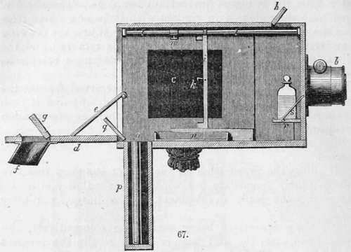
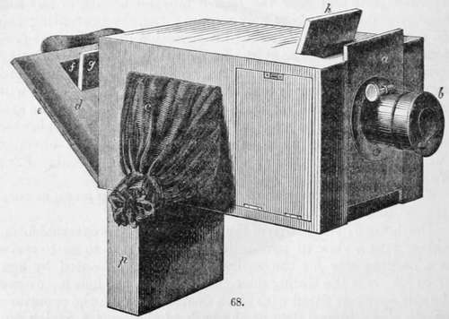
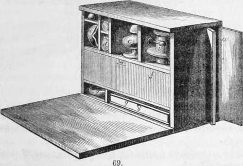
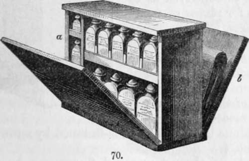
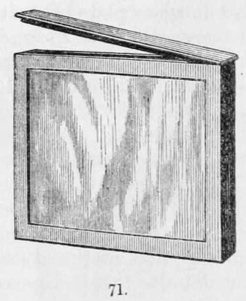
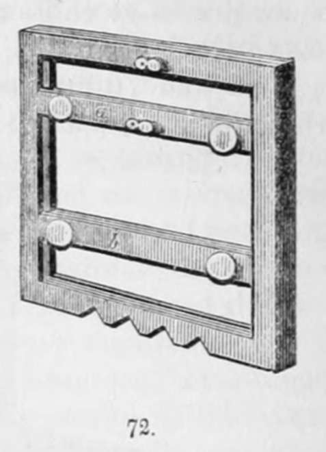
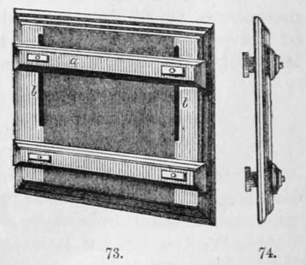

The Collodion Process. Part 8
Description
This section is from the book "A Manual Of Photography", by Robert Hunt. Also available from Amazon: A Manual of Photography.
The Collodion Process. Part 8
"When, from experience, the picture is sufficiently brought out, a little water is poured on the glass to wash off the developing solution, and the drawing is partially fixed by the application of a small quantity of a solution of common salt.
"The drawing may now be removed from the camera without fear of being injured by light, and the remainder of the operations can be conducted outside the camera.
"If the film is sufficiently strong to bear removal from the glass, the following procedure is adopted :—The plate of glass is placed horizontally upon the back lid of the camera, which is hung so as to form a temporary table, and the film is loosened from the edge of the glass with a flat strip of glass; a sheet of damp paper is then placed flat on the drawing, and rather within its upper edge; the film is turned over the edge of the paper, and a glass rod is placed just within the edge. The sheet of paper with the collodion in contact with it is now raised from the glass, and rolled up on the glass rod. When the drawing is entirely enclosed in the paper, the rod is removed, and the delicate film thus encased is put away into its proper receptacle, to be finally fixed and mounted at leisure.
"The drawing thus rolled up can be preserved for months without injury, provided it is kept slightly damp; and if each drawing is enclosed in another sheet of paper, its preservation is still further secured.
" The advantages of a camera of this kind may be thus enumerated.
" It allows the preparation on the spot of the most sensitive surfaces; their immediate use whilst the sensibility is at its maximum; the ready development of the image, and after fixing.
"All these operations being carried on consecutively, the operator can, after the first trial, see what results the progress of his labours is likely to produce.
" It gives him the power of shading off any portions of the view during the action of the light, by holding in front of the prepared plate and near the lens a movable screen, or any flat piece of wood, as the case may require ; thereby preventing the too rapid action and consequent solarization of the distant portions of the scene. The spire of a church, for instance, pointing upwards into a bright sky, often requires this precaution to prevent its being entirely lost. Other instances of this effect will readily suggest themselves to those at all acquainted with the art.
" The camera can be made, with slight modifications, applicable to any other process on paper or glass, and of course obviates the necessity of any kind of portable tent."—Archer, F.S., Manual of the Collodion Photographic Process.
The following figures represent Mr. Archer's camera, as constructed and improved by Mr. Griffin:—
The figure 67 is a section of the camera, and 68 its external form, which, with a view to portability, is constructed so as to serve as a packing-case for the entire apparatus represented by figs. 67 to 73. a is the sliding door that supports the lens b. c c are the side openings fitted with cloth sleeves to admit the operator's arms. d is a hinged door at the back of the camera, which can be supported like a table by the hook e. f is the opening for looking into the camera during an operation. This opening is closed, when necessary, by the door g, which can be opened by the hand passed into the camera through the sleeves c. The yellow glass window which admits light into the camera during an operation is under the door h. i is the sliding frame for holding the focusing glass, or the frame with the prepared glass, either of which is fastened to the sliding frame by the check k. The frame slides along the rod l, l, and can be fixed at the proper focus by means of the step m. n is the gutta percha washing tray. o is an opening in the bottom of the camera near the door, to admit the well p, and which is closed, when the well is removed, by the door q. The well is divided into two cells, one of which contains the focusing glass, and the other the glass trough, each in a frame adapted to the sliding frame i. On each side of the sliding door that supports the lens a, there is, within the camera, a small hinged table r, supported by a bracket s. These two tables serve to support the bottles that contain the solutions necessary to be applied to the- glass plate after its exposure to the lens.
Figs. 69 and 70 represent two cases, containing the various instruments and chemical preparations required for the collodion process, a, fig. 69, is a grooved cell for a series of glass plates. b is a receptacle for the lens of the camera. c contains a spirit lamp; d, a pair of glass measures; e, a porcelain pestle and mortar. The door f encloses a space containing a funnel with filter papers, and silks and leathers for cleaning the plates, g contains a small retort stand, a porcelain capsule, and a box with scales and weights.
The case, fig. 70, is divided into two compartments. One side, a, contains twelve stoppered glass bottles, with the various chemical preparations required by the operator. The other side, which can be closed by the door 6, contains a supply of photographic paper, both for negative and positive pictures.
Fig. 71 is the glass trough for holding the nitrate of silver solution.
Fig. 72 is a frame for fixing in the camera such plates of glass as do not require to be exposed to the lens while still in the glass trough.
Fig. 73 is a pressure frame for the preparation of positive from negative photographs.
Fig. 74 is a section of this frame.
Both of these frames, figs. 72 and 73, are so contrived as to be suitable for plates of many different sizes. In the frame represented by fig. 72, the bars a and b are both movable, to permit the fixing of the plate in the camera directly opposite the centre of the lens. In the frame represented by fig. 73, the bar a alone is movable, and is fastened by screws that move in the slits b, b.
The whole of these boxes and frames can be conveniently packed in the camera. The box, fig. 68, is passed in by the side-door ; the well, p, and all the other cases and frames, by the door d; and the camera, thus loaded for transport, is put into a strong leather case.
Continue to: